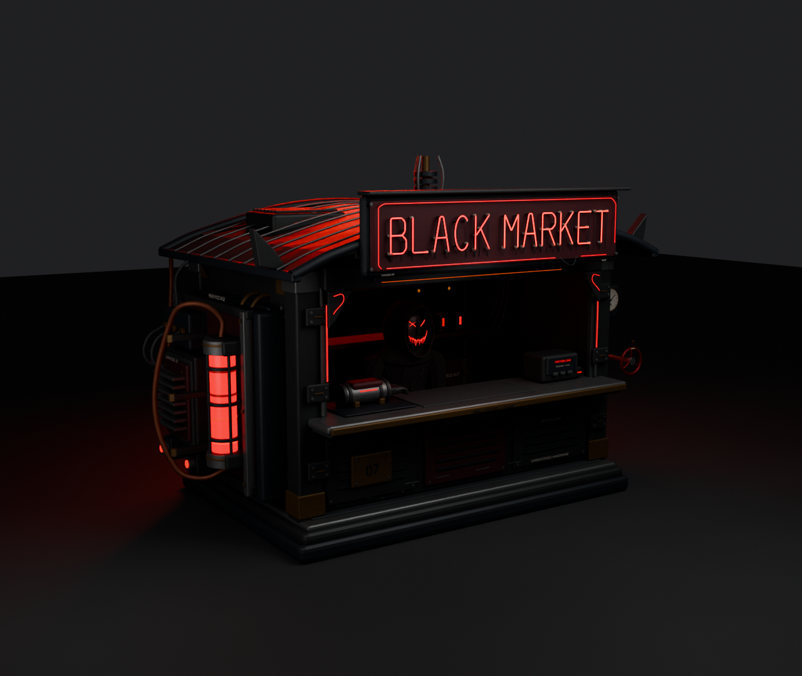
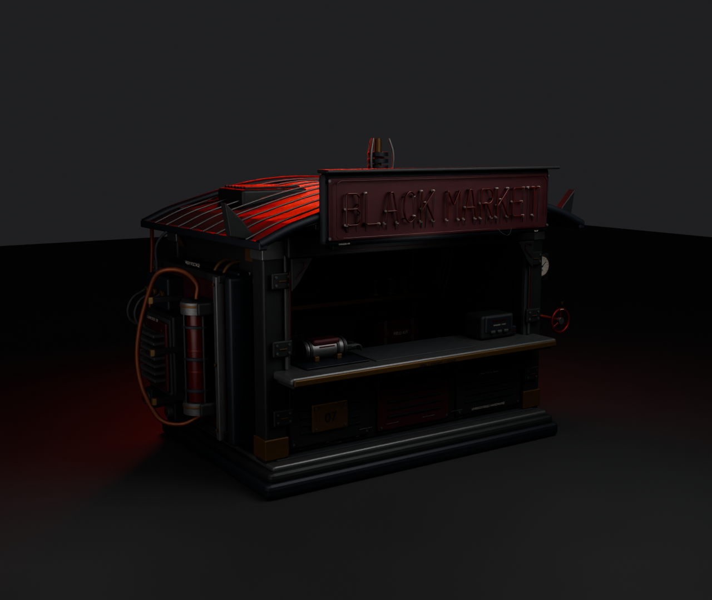
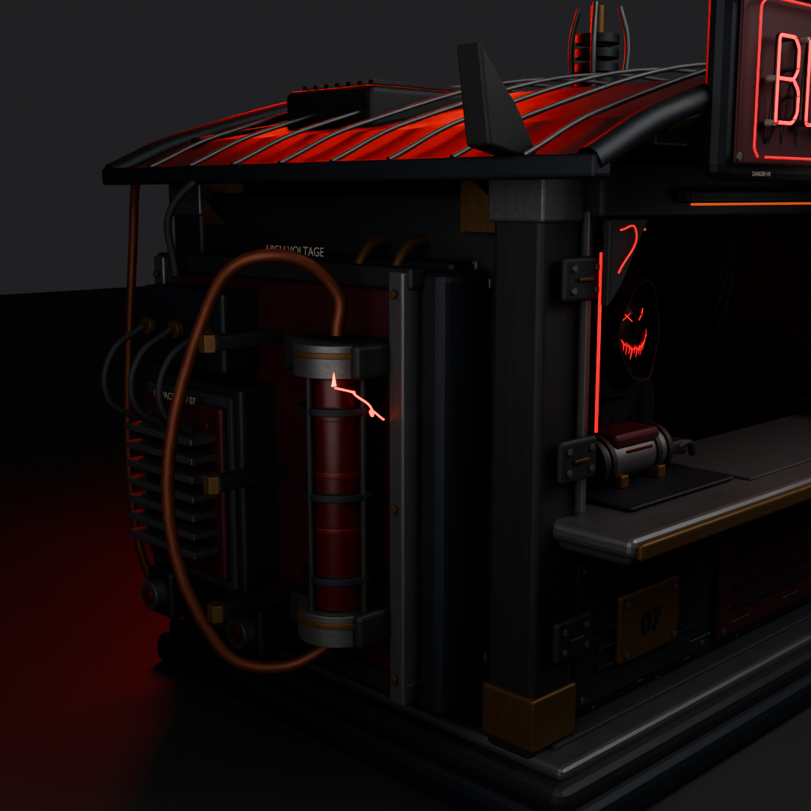
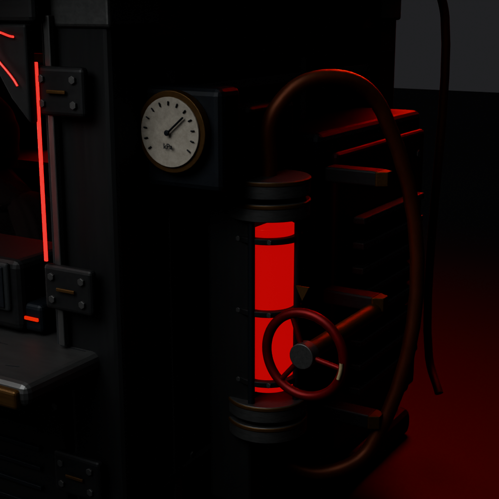
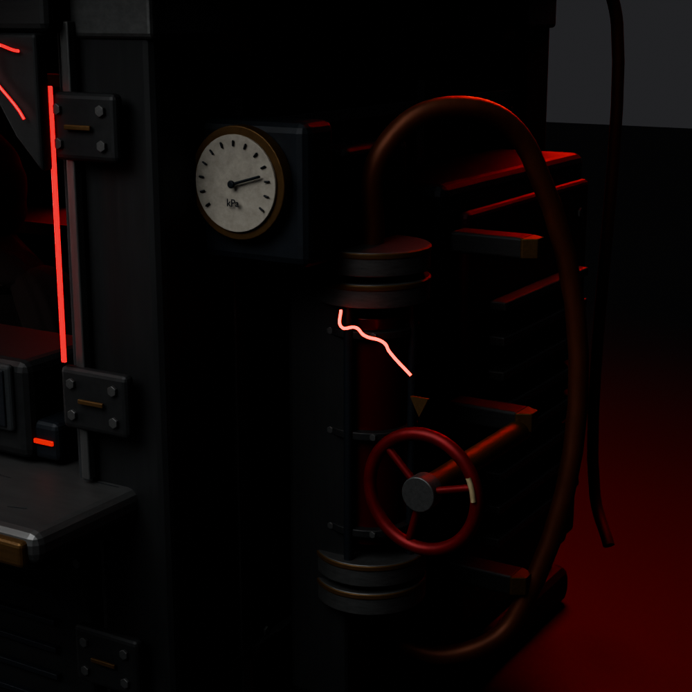
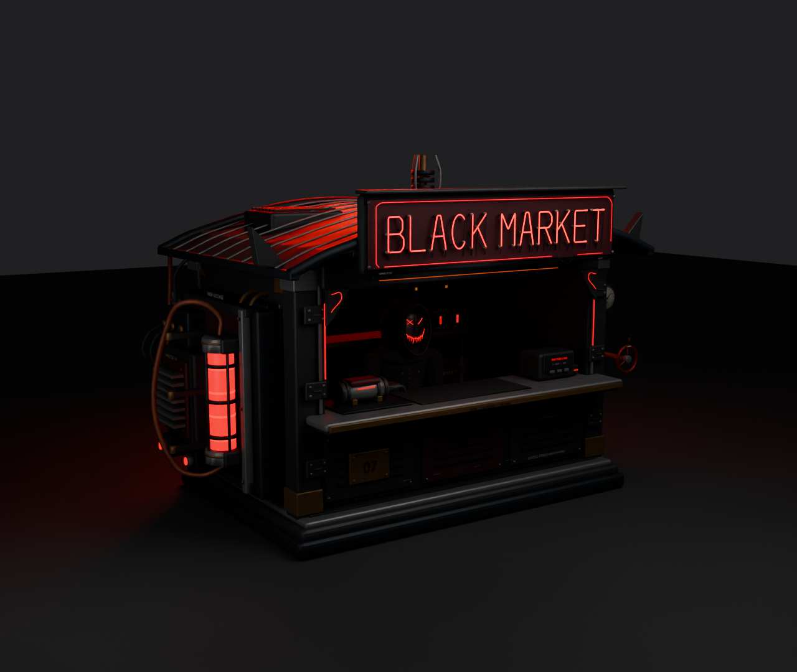
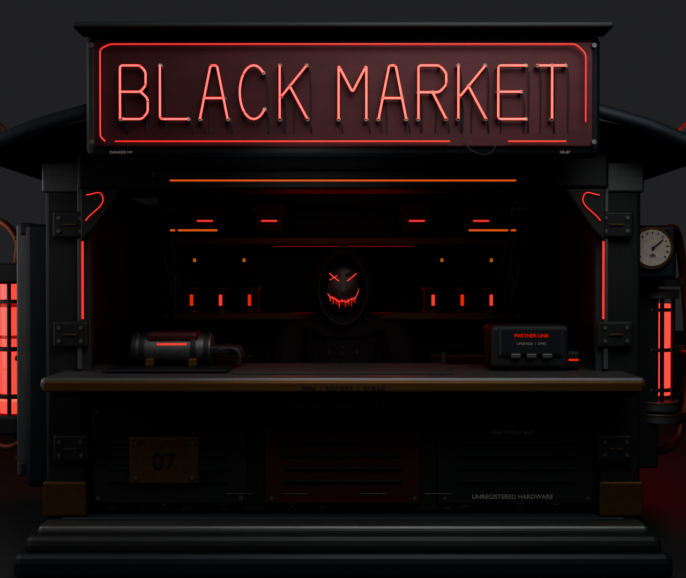
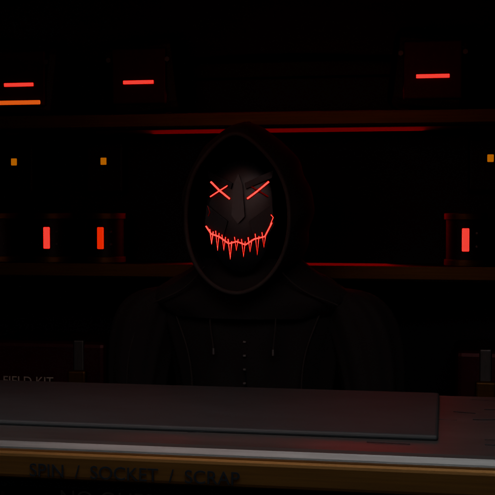
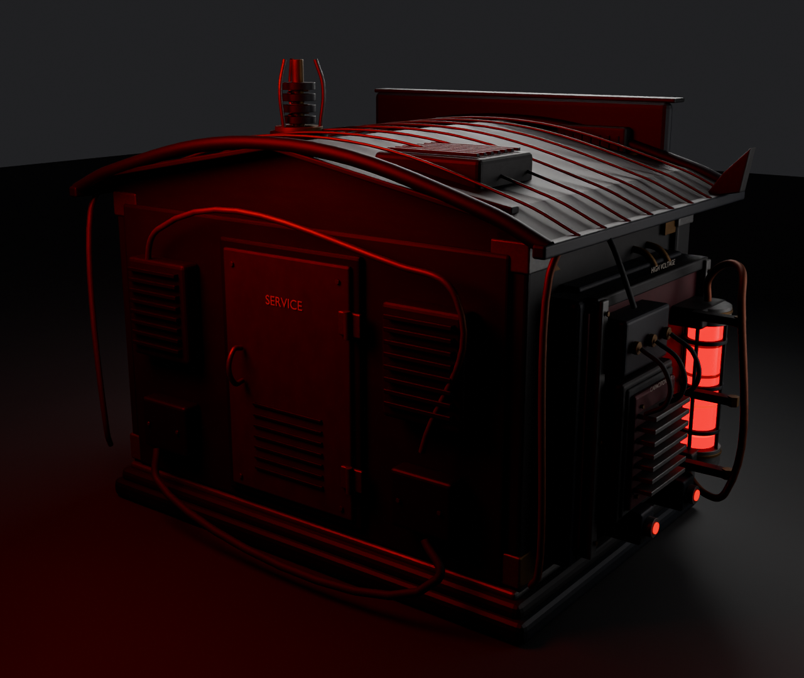

ITEM SHOP
Blackened metal, oxblood panels and damaged red neon. A shorter masked merchant stands in the shadows with his arms down.

Current Blender art study
T, E and H share the canisters' power faults; the other letters stay lit. The mask breathes independently. Larger sparks discharge on both sides. Unmute for synchronized electrical crackles.
Pressure valve: 100-degree travel, moving ivory index, and right-side sparks

Powered off: no merchant, emission, sparks or sound

Left service bay

Animated pressure assembly

Right canister discharge; indexed valve travels through 100 degrees

Native geometry and baked maps — Blender preview

Service window

Merchant detail

Rear construction
Editable Blender master · Native crown-room implementation authored. These are Blender previews; native appearance awaits the user's playtest.